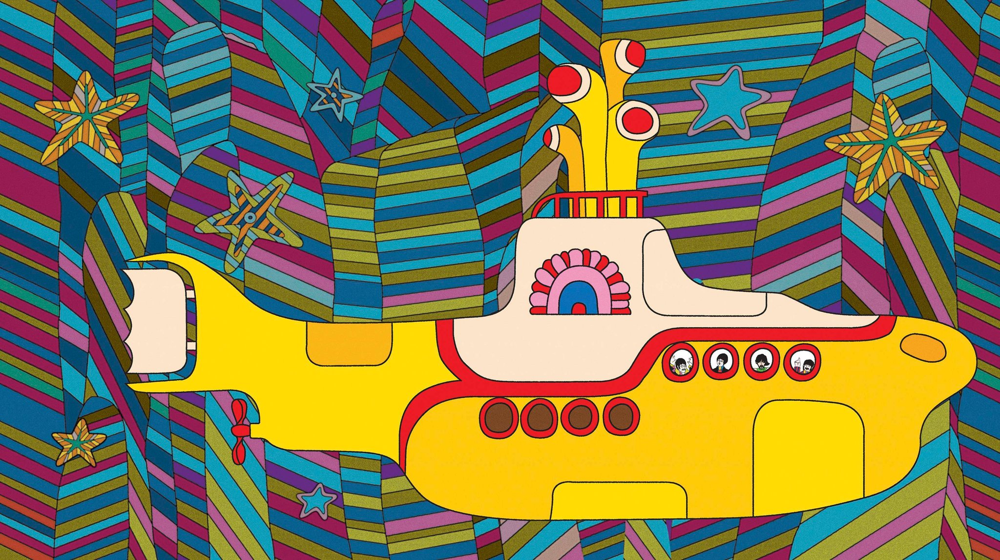

Last modified on August 20, 2022
About me
I'm Stan, I'm 23 years old, I live in the Netherlands and I enjoy many things. I like the arts (especially music), I like the sciences, I like philosophy and religion. Generally speaking, I like a good balance between pragmatism and idealism. Please don't set aside your morals for money.
I like frugality and not taking more than needed. I like honesty and transparency. I like freedom of speech. I think it's important to be able to discuss openly and still be able to be friends while having disagreements.
I like optimism, but not to the detriment of realism. In general, facts over feelings. I like comedy and people not taking themselves to seriously. Relax a little and have some fun.
But most importantly, I like peace. All this heated polarity is heartbreaking. We're in this together.
Almost forgot to mention: I'm a student of Software Engineering and I'm in my final year. So it seems like my career will be in software! Also, I make electronic music.
Skills and experience
- Software (take this with a grain of salt)
- HTML
- CSS
- JavaScript
- TypeScript
- Angular
- NodeJS
- SQL (PostgreSQL)
- NoSQL (MongoDB)
- A-Frame (VR)
- Python
- Django
- Java (Android)
- Go
- Docker
- Music
- (Ableton) Live 11
- Electronic music
- Sound design (Serum)
- Mixing
- Mastering (I guess)
Quick history
The fastsest way to describe my life would be: gaming. I've been an avid gamer since I was around four years old. It has always been my most defining characteristic. I was the gamer.
And, I became really good at it. Any game that you play against other people I had to be good at. I derived all my status from my performance in gaming...
But don't get me wrong, I also played for fun. I've met awesome people online and have had lots of great times. I've played many amazing games and some of them mean a lot to me.
Some of my favorite games
- Cuphead
- UNDERTALE
- Overwatch
- Super Smash Bros. Ultimate
- Mario Kart 8
- Hades
- Celeste
- Hyper Light Drifter
- Shovel Knight
- And many, many more...
Even though gaming was a big part of my life, I also did other stuff. I'm pretty social and have always had great friends to hang around with. I played football for many years and really enjoyed having fun with my teammates.
School, however, has always been a bit of a struggle for me. Not that I found it hard, I just found it hugely unsatisfying. Even university to this date is not really satisfying to me. It's not intrinsincally rewarding to me. I prefer self-study.
And just like everyone: I've had my ups and downs.
How I got into music
As already mentioned, I adore music and I even make music myself. My father has been a musician in the past and he always hoped I wanted to learn an instrument as well. Unfortunately, I wasn't interested in music as a young kid.
The first music I enjoyed as a kid was by Michael Jackson. I became a big fan and collected basically all of his albums. Apart from that I adored The Beatles' Yellow Submarine movie soundtrack.
When Call of Duty Modern Warfare 2 was the big game, I got introduced to electronic music through 'quick scope' montages. I was instantly in love. It was something new and had an amazing energy. This is how I became fond of 'drum and bass' and dubstep. StanSB and Skrillex where my favorite artists at the time.
An online friend of mine did music production and introduced me to it and the SoundCloud underground producer scene. This is where I got introduced to many great artists like Herzeloyde, Sam Gellaitry and many more. It was incredibly inspiring and I got more and more into music production and started "releasing" music as Color Glitch.
While my "roots" are in electronic music, which is already incredibly varied, I love many different styles of music. It's very hard to describe my music taste and ten songs wouldn't be enough to demonstrate it. Naming genres I enjoy is also not enough. Noone ever likes all songs in a particular genre. Also, there are major misconceptions of what a genre actually sounds like.
To give a bit of an idea though, here are some lists of music I enjoy.
Well known artists I enjoy quite a bit
- Daft Punk
- Michael Jackson
- Tyler, The Creator
- Jacob Collier
- Disclosure
The above might give you an idea of what I like, but the list below is even more important to me. Both lists lack a dubstep artist though, my favorites in dubstep are Space Laces and HOL!.
My absolute top 10 artists
- Quickly, quickly
- Tennyson
- Bickle
- underscores
- Noisia
- Billboard
- Anomalie
- Sam Gellaitry
- Duskus
- Herzeloyde
There are so many more artists that are awesome and I plan on doing many articles about music, highlighting great artists or albums.